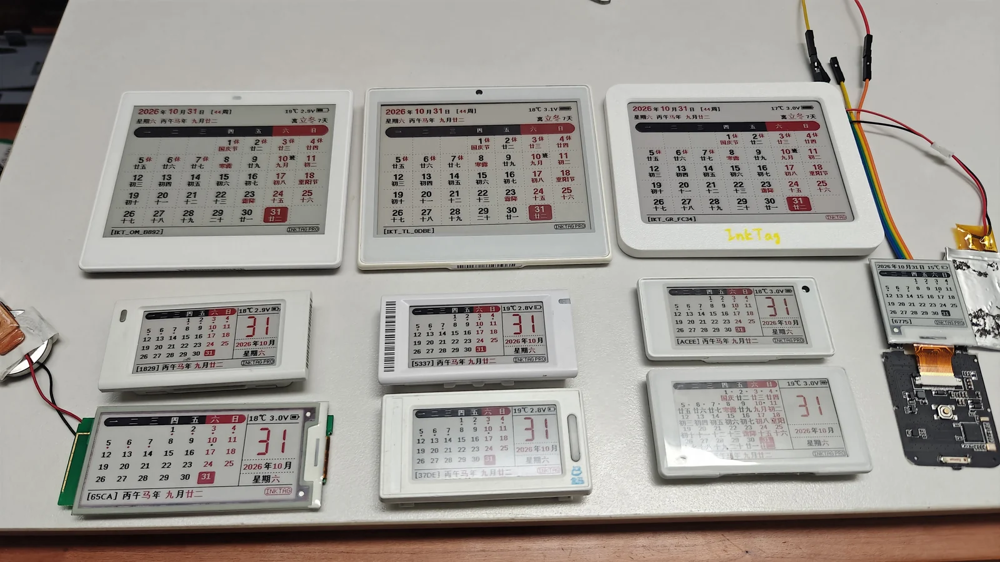

InkTag
中文 | English
InkTag 是一个跨平台的墨水屏价签蓝牙项目，可以让闲置的电子价签变成桌面日历、时钟、电子相框和信息牌。InkTag 提供了 Goodix、OnMicro、Telink、Nordic、Dialog 等多款蓝牙主控的定制固件，使用 Web Bluetooth，用浏览器就能换图片、编辑画面和管理设备；也可以用 CLI 批量操作、运行天气站和定时推送。
电子纸通过反射环境光显示，观感接近纸张。刷新完成后，屏幕保持静态画面无需持续供电，适合长期展示日历、照片和提示信息。刷新较少、设备大部分时间待机时，使用纽扣电池也能获得较长续航；实际续航取决于电池容量、刷新频率、蓝牙使用和具体硬件。
图文使用手册 · 玩法合集 · 打开 WebUI · 使用本地客户端 · 更新记录

部分支持设备实物。主控、主板丝印与屏幕配置详见已适配设备和已实测屏幕。
快速开始
已经下载或拉取本仓库？也可以直接用兼容的浏览器打开
webui-standalone/InkTag-WebUI.html，无需启动本地服务或部署网站。
请保留旁边的 assets/ 等配套资源。蓝牙功能需要浏览器授权；Find 轨迹查询仍需本地客户端。
1. 准备设备和浏览器
准备一台已安装兼容 InkTag 固件的设备，保持稳定供电，并打开电脑或手机的蓝牙。电脑推荐 Chrome 或 Edge；iPhone／iPad 推荐 Bluefy；Android 首选 Chrome。不要在微信等内置窗口中连接设备，请在上述浏览器中打开网页并允许蓝牙访问。
设备仍是原厂固件时，请先阅读完整烧录说明，核对主控和主板。按准确设备选择固件、主板配置和配套工具；完成安装后再连接 InkTag。可下载文件以 Releases 实际附件为准。
2. 打开网页并连接
打开 InkTag WebUI，点击“连接”，在浏览器的蓝牙选择框中选择你的设备并授权。设备的默认蓝牙名类似 IKT_TL_1234；名称末尾带 _OTA 的是固件恢复模式。
连接后，到“设置”查看主控、固件版本和屏幕配置，确认屏幕尺寸、颜色与方向符合实际设备。若浏览器没有蓝牙入口或找不到设备，先看连接问题，也可以换用电脑端 Chrome／Edge。
3. 发送第一张图片
进入“图片”，导入照片，调整裁剪、方向和抖动效果。预览满意后点击“发送到设备”，先选择“仅显示一次”，确认发送。
等待传输和屏幕刷新完成，再继续操作。墨水屏全刷时闪烁一段时间是正常现象；传输显示 100% 时，屏幕可能还在刷新。
4. 试试日历、画板和轮播
- 想显示日期或时间：在显示设置中选择内置日历或时钟。
- 想自己排版：进入“创作”，选一个模板或空白画布，添加文字、图片和二维码，然后发送；不必先保存成页面。
- 想轮换多张图片：发送时选择保存到图槽，再开启轮播。图槽已满时可选已有图槽覆盖。
完成后可以断开蓝牙，设备会继续显示当前画面；支持的内置日历、时钟和图槽轮播按设备设置运行。
主要功能
InkTag 提供免费版本（Free），已能够满足大部分日常使用需求。Pro 提供更多高级和实验功能，适合喜欢折腾、愿意探索的用户。所有功能均以设备实际提供的能力为准。
[!NOTE] 使用与捐赠提醒
InkTag 固件免费使用，项目未提供购买链接。若从商家购买设备或相关服务后遇到问题，请联系购买渠道的商家。
捐赠支持项目后可获得 Pro 激活码。大部分 Pro 功能属于实验功能，无法保证稳定性，请谨慎开通。
| 功能 | 🆓 Free | ✨ Pro |
|---|---|---|
| 图片、内置日历、时钟、设备信息与二维码 | 支持 | 支持 |
| 图片裁剪、旋转、抖动、画板和设备效果预览 | 支持 | 支持 |
| 图片存储与离线轮播 | 通常小屏最多 10 张、其他屏最多 4 张 | 使用全部可用图槽容量 |
| 屏幕、方向、屏幕引脚和 LED 引脚配置 | 支持已适配硬件 | 相同 |
| 状态灯、已适配的按键与蜂鸣器 | 按设备能力开放 | 相同 |
| 蓝牙连接、设备诊断、OTA 和 Recovery | 支持 | 支持 |
| NFC 碰一碰打开设备链接 | 有相应硬件时支持 | 支持 |
| 主机页面与定制推送 | 可编辑、转换和离线预览 | 设备接收对应高级内容时需 Pro；自动推送需主机持续在线 |
| NFC 手机命令切换界面或图槽 | — | 有相应硬件时支持 |
| 高级屏幕控制 | — | 部分屏幕局刷与 E6 六色屏幕控制，需兼容硬件、正确接线及相应驱动 |
| 用户字库、蓝牙改名与设备密码 | — | 支持相应能力的设备可用 |
| 隐藏或调整 InkTag 标识 | — | 支持 |
| 防丢器（苹果 Find My 网络） | — | 实验功能；在线版可登记与控制广播，位置查询需要本地服务 |
| NFC 传图（待开发） | — | 规划中的 Pro 功能，尚不可用 |
| 自定义动态设备布局（待开发） | — | 规划中的 Pro 功能，尚不可用 |
“小屏”指可视区长边小于 300 像素。DA14585 和 nRF52811 受固件尺寸限制，仅提供 Free 功能，无法激活 Pro；这两个主控的 Free 固件不限制图槽数量，不套用 10／4 张额度，可存图片数只受实际存储容量限制。 各主控的可用空间与图片数量估算见图片存储。
局刷时钟每天仍会全屏刷新并改变背景，频繁刷新也更耗电。E6 图片的离线转换和预览不受 Pro 限制。更多局刷方案、自定义设备动态布局、NFC 传图和关闭蓝牙广播等功能尚未提供。
详细说明：Free 与 Pro · 画板与天气站 · 设备与屏幕
支持的主控
| 主控厂商 | 主控 |
|---|---|
| Goodix 汇顶 | GR5331、GR5513、GR5515 |
| OnMicro 昂瑞微 | OM6626 |
| Telink 泰凌微 | TLSR8359（HS9118） |
| Nordic | nRF52832、nRF52811 |
| Renesas（原 Dialog） | DA14585 |
主板丝印、产品型号和使用限制见已适配设备；屏幕型号、实测范围和局刷支持见已实测屏幕。主控在支持列表中，不表示所有使用它的主板都可以直接安装。
选择适合你的使用方式
在线 WebUI：打开网页即可使用
- 图片：导入照片，调整构图、方向和抖动参数，预览实际屏幕颜色，再选择仅显示一次或保存到图槽；已满的图槽可选择覆盖。
- 创作：用文字、图片、二维码等控件制作页面，也可编辑天气站和日期牌。静态页面由主机渲染成图片。
- 设置：查看设备与屏幕信息、管理字体和引脚、设置交互及升级固件。未支持的能力保持禁用。
- Find：实验性防丢功能，通过附近参与苹果 Find My 网络的设备转递位置，不是 GPS 实时定位。小标签适合随身防丢；在线版可登记设备并保存加密迁移资料，再导入本地客户端查询。换电脑时可加密导出全部标签，见 Find 查询与迁移。
在线版无需安装。需要本机持久服务或 Find 时，使用附带本地 WebUI 的 CLI 包；安装及手机局域网访问见WebUI 使用说明和在线版与本地版。不需要 Node.js。
CLI：适合批量操作和自动化
安装 Python 3.11 或更新版本，从本仓库下载／拉取代码，或解压完整 CLI ZIP，进入同时包含 cli/ 和 webui/ 的根目录。推荐使用统一安装入口：
Windows：
powershell -NoProfile -ExecutionPolicy Bypass -File .\install_inktag.ps1
macOS／Linux：
sh install_inktag.sh
脚本会把 CLI 安装到 cli/.venv，并自动安装本地 Find 查询服务的依赖；Find 环境单独位于用户数据目录的 find/runtime/.venv。安装完成后以后台模式启动本地 WebUI 和 Find 查询服务（webui start）；关闭终端不会停止服务。安装完成时会显示可直接复制的启动、停止、状态和日志命令。macOS 新安装的数据和日志位于 ~/.inktag/；已有旧目录时继续使用原目录，避免丢失会话或标签信息。不会修改系统 Python，也不会自动登录 Apple、连接设备或清除已有数据。
首次安装需要联网。Windows 还需预先安装完整版 7-Zip，首次会下载约 292 MB 的 Apple 认证组件镜像；macOS 使用系统原生认证组件，无需该镜像。Linux 的位置查询仍未完成资格验证。
只安装、不启动：Windows 运行 powershell -NoProfile -ExecutionPolicy Bypass -File .\install_inktag.ps1 --prepare-only；macOS／Linux 运行 sh install_inktag.sh --prepare-only。安装完成后，下面两种使用方式任选一种，命令参数完全相同。
方式一：直接运行客户端脚本（无需激活环境）
在仓库／完整 CLI 包根目录运行。脚本会使用 cli/.venv 中的 Python，不需要把 inktag-cli 加到系统 PATH。
Windows PowerShell：
powershell -NoProfile -ExecutionPolicy Bypass -File .\cli\inktag.ps1 device scan
macOS／Linux：
bash cli/inktag.sh device scan
其他操作只需把末尾的 device scan 换成相应命令，例如 device -n B892 info。查看帮助用 --help。如果还没有 cli/.venv，先运行上面的安装脚本；客户端脚本本身不安装 Python。
方式二：激活 Python 环境后运行 inktag-cli
使用前面的统一安装脚本准备好 cli/.venv，再在当前终端激活：
Windows PowerShell：
. .\cli\.venv\Scripts\Activate.ps1
inktag-cli device scan
macOS／Linux：
source cli/.venv/bin/activate
inktag-cli device scan
每个新终端需重新激活，退出用 deactivate。如果系统限制激活脚本，直接使用方式一，不必修改系统执行策略。
只需要 CLI、打算自行安装 Python 环境时，可先安装 Python 3.11+，再按 CLI 手册创建虚拟环境并安装 cli/；需要 Find 查询时推荐使用统一安装脚本，以便一并准备查询依赖。更新后重新运行安装脚本即可。
下面用 inktag-cli 表示已激活环境的写法；使用方式一时，替换命令开头即可：
inktag-cli device --ble-name IKT_TL_1234 info
inktag-cli display --ble-name IKT_TL_1234 calendar
inktag-cli image --ble-name IKT_TL_1234 upload photo.jpg --slot next --name photo
inktag-cli device --ble-name IKT_TL_1234 slot list
inktag-cli device --ble-name IKT_TL_1234 display slideshow start --interval 5m
inktag-cli device --ble-name IKT_TL_1234 display slideshow stop
将蓝牙名称和图片路径替换为实际内容。操作同一设备前，先断开它在 WebUI 中的连接。更多命令、密码缓存及故障排查见 CLI 手册。
本地服务：开启 Find 设备轨迹记录
本仓库与完整 CLI ZIP 均包含本地 WebUI 和 Find 查询服务，无需另外下载服务包。首次使用运行统一安装脚本；后续仍使用同一套客户端命令启动：
Windows：
powershell -NoProfile -ExecutionPolicy Bypass -File .\cli\inktag.ps1 webui start --repo . --enable-tls
macOS／Linux：
bash cli/inktag.sh webui start --repo . --enable-tls
已经激活 Python 环境时，也可运行：
inktag-cli webui start --repo . --enable-tls
打开本地 WebUI 的 Find 页面，登录查询账号，登记标签或导入已有标签信息，点击“开启记录”。保持本地服务及网络连接，服务会按设定间隔查询并保存收到的位置报告；不保证每次查询都有新位置。安装及手机局域网访问见 WebUI 使用说明，功能说明见 Find 查询与标签迁移。
完整烧录与 OTA
- 原厂设备或需要有线恢复：核对真实主控、主板丝印和配置，使用对应的完整烧录包。完整烧录会清理主控侧用户设置及数据；按工具提示确认，并保留身份、校准和原厂备份。个别主板的独立外置图片 Flash 按工具说明保留。
- 已运行 InkTag 的设备：优先使用 OTA。在“设置 → 固件”连接设备查看可用的 OTA 包，或选择本地已签名应用包，核对信息后开始升级。显示传输 100% 不代表完成；等待应用验身和回连成功。
- 升级未完成：保存日志，重新连接确认设备状态；需要继续时重新选择匹配的 OTA 应用包并重试，不盲目重复结果未知的写入。
完整烧录工具的明文代码与配置位于本仓库的 firmware/<主控_主板>/，工具不包含固件。本版提供已适配主板的 OTA 与完整固件，烧录工具独立使用。固件与客户端附件均以 Releases 实际附件为准。未列出的文件暂不可下载，不要按文件名、屏幕尺寸或相似型号互刷。
操作与限制：完整烧录 · OTA 与 Recovery · 检查客户端更新
常见问题与反馈
- 屏幕全刷时闪烁、低温时变慢通常是墨水屏工作特点；等待刷新结束，不连续重复操作。
- 屏幕仅支持自身的有限颜色。照片需量化和抖动，不能获得 LCD 的连续色阶。
- 没有蓝牙入口、读取失败或登录异常时，先查看常见问题，反馈时附客户端版本、主控和已脱敏日志。
- 反馈问题可通过 GitHub Issues提交，请同时说明操作步骤和实际错误提示。
- 不要公开设备密码、激活码、Find 私钥、账号会话或定位记录。使用前请阅读安全与隐私。
致谢
感谢以下项目的作者与贡献者：
- EPD-nRF5：电子价签固件、屏幕驱动与客户端实现的基础和参考。
- ATC_TLSR_Paper：Hanshow／TLSR8359 价签的硬件资料与开放实现参考。
- epdoptimize：电子纸图片颜色量化与抖动。
- U8g2 for Adafruit GFX 及文泉驿字体项目：字形渲染与中文字体资源。
- FindMy.py 和 os-findmy-e：Find 查询与本地认证适配。
同时感谢 Leafer、React、Lucide、各主控工具生态和提供硬件、测试及反馈的朋友。适用的版权与许可见第三方声明。
License
InkTag 自有固件、编译版 WebUI 和 CLI 统一采用 PolyForm Noncommercial 1.0.0，按许可允许的非商业用途使用。第三方内容保留各自许可。完整范围和组件说明见许可范围。
用户文档 © InkTag contributors，保留所有权利。